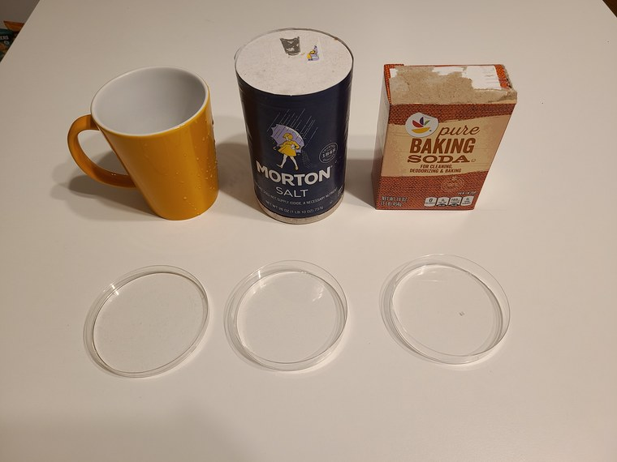
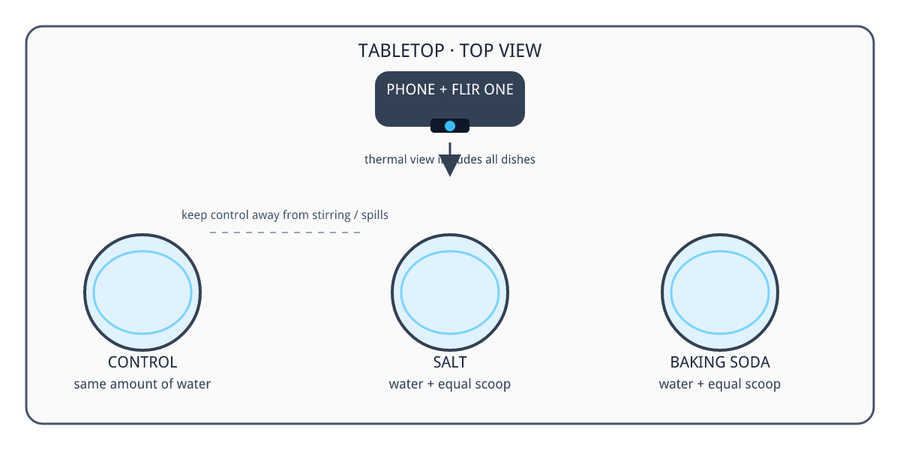
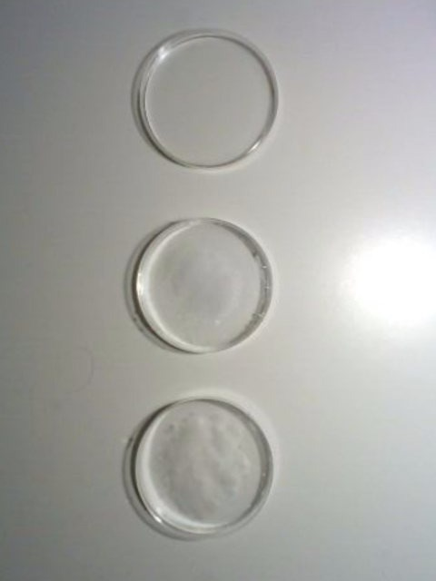
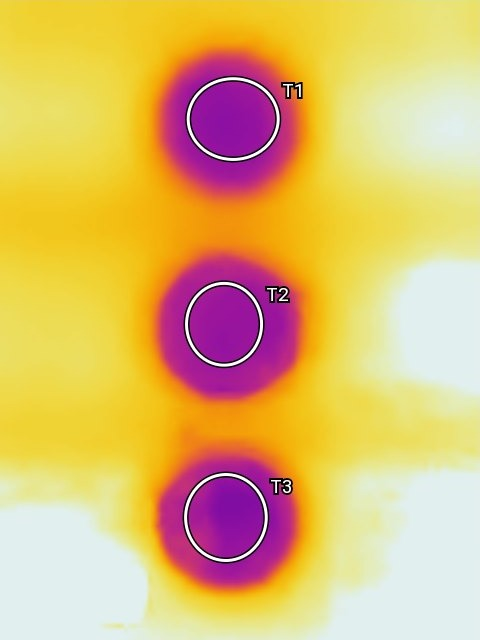
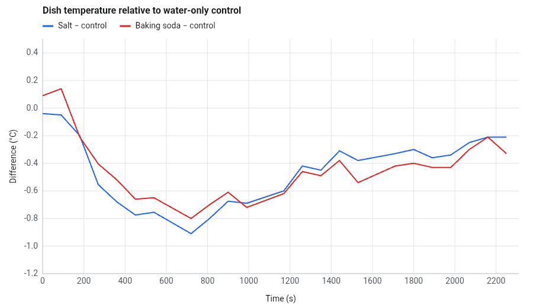
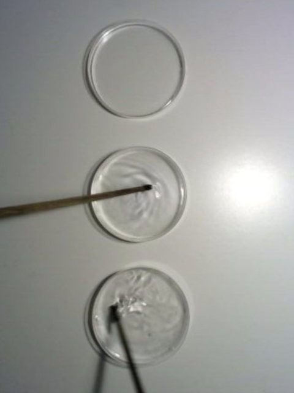
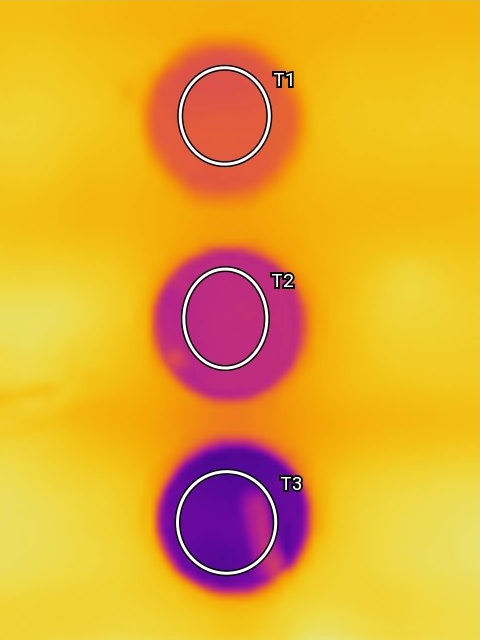
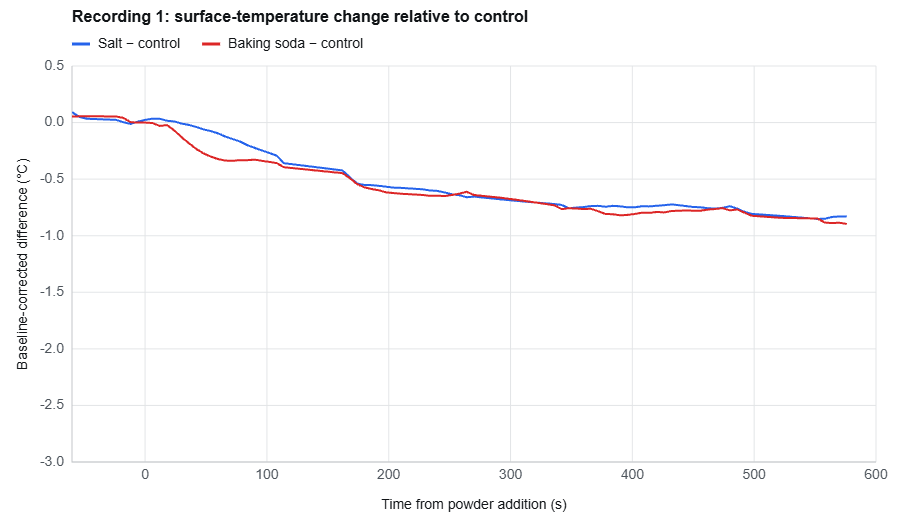
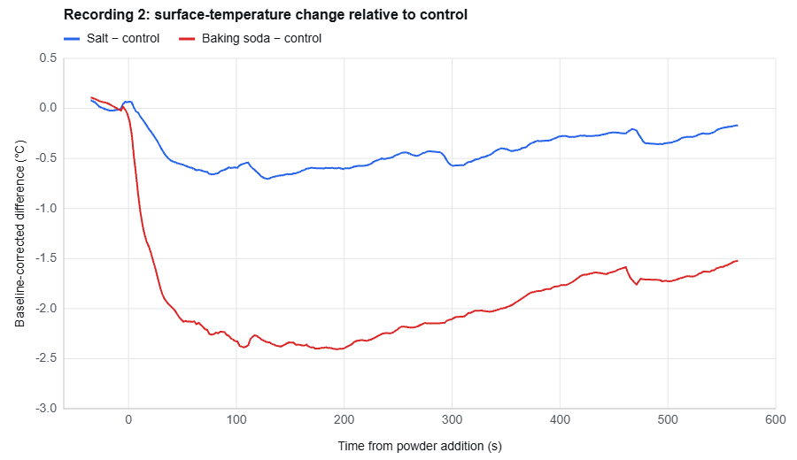

Can AI be a good lab partner?
We showed an AI agent a photo of salt, baking soda, and three dishes. It designed an experiment, read our thermal recordings, caught mistakes, ours and its own, and wrote the lab report.
Most school experiments begin with a lab manual. Someone has already decided what to mix, what to measure, and what the answer should be. The manual leaves out the parts of science that take scientists the most time: working out what experiment the things at hand allow, finding out why a result did not match the prediction, and writing down what the data show and what they do not. A good lab partner helps with all three.
The Experiments section of Infrared Explorer gives that role to an AI agent. A student photographs the materials on the table, or just types what they are, and the agent designs an experiment for them. The student does the experiment by hand and records it with a thermal camera. The agent reads the temperature data in the recording, discusses the result, and writes a lab report. The agent never touches the bench: all it knows about the experiment comes through the camera and the conversation.
This article follows one experiment from the first photo to the final report: salt and baking soda from a kitchen, three dishes of water, two recordings, and a first result that contradicted the prediction. The agent ran on OpenAI's GPT-6 Luna. The experiment itself, with the whole conversation, is at the end of the article.
From a photo to a plan
We put a mug, a canister of table salt, a box of baking soda, and three glass Petri dishes on a table, took a photo of them in the app (Figure 1), and typed one sentence:
What experiment can I do using these materials?
The agent named the experiment “Cooling When Powders Dissolve,” drew the setup (Figure 2), and wrote a plan in three parts: question and prediction, setup, and recording. Every item in the photo got a job: a dish of plain water as the control, a dish each for the salt and the baking soda, and the mug to pour the water.


The plan made a prediction with numbers in it: salt and baking soda both take in heat as they dissolve, so both of their dishes should cool, by a few tenths of a degree for salt and by perhaps 0.5 to 1.5 °C for baking soda. It also said what would count as a failed prediction: the two dishes following the control, or warming. And it named a weakness in its own design before we did: equal spoonfuls are not equal masses. The plan stays at hand in the app's camera during the recording.
Reading the recording
We filled the three dishes with water, pointed a FLIR ONE Edge Pro straight down at them, and recorded for nearly 40 minutes in the app's time-lapse mode. We marked a reading area on each water surface (T1, T2, and T3 in Figure 3). About 100 seconds in, we tipped a scoop of salt into the middle dish and an equal scoop of baking soda into the bottom dish. The plan said to stir each for 10 seconds. But we did not stir.


Figure 3: The first run 105 s in, seen in visible light (left) and infrared light (right). Top to bottom: plain water, water with salt, water with baking soda. The baking soda lies in a white heap on the bottom of its dish. The colors run from 18.2 °C (dark) to 23.2 °C (white).
When the recording was added to the experiment, the agent went to work without being asked. It called up thermal and visible-light frames of its choosing, and it wrote and ran its own code to read the temperature inside the three reading areas through the recording. It worked out for itself that the top dish was the control, the middle one salt, and the bottom one baking soda, and that the salt and the baking soda were added about 90 to 105 seconds into the recording.
It also dealt with a problem in the data that we had not mentioned. A thermal camera closes its shutter from time to time to recalibrate, and ours did so 44 times during the recording. Each time, every reading in the frame dipped by about 1 °C and came back. The agent traced the dips to the recalibrations and chose to compare the dishes with each other in the same frame instead of following each one alone. It left out the frames around each recalibration and subtracted the control's reading from the other two dishes' readings. Figure 4 is the chart it drew.

All three water surfaces started at about 19.8 °C. Between 5 and 15 minutes the salt dish read about 0.8 °C below the control and the baking soda dish about 0.7 °C below, and by the end both had crept back to about 0.2 °C below. It was a tie, and the agent said plainly what that meant: the result did not support its own prediction that baking soda would cool more.
The first recording, with a chart of the salt and baking soda dishes' temperatures relative to the control. Press Play, or move a thermometer.
Arguing about a tie
The analysis had one thing wrong. The agent had assumed that we followed its plan, and it wrote that the salt and the baking soda were “added and stirred.” We told it that nothing had been stirred, and it took the correction: “I misread the setup.”
Then it corrected us. When we asked why there was no difference between salt and baking soda, it answered, “There is a small difference in your capture,” and called it “a weak result, not a clear demonstration that salt cools more.” It looked up the chemistry and cited its source: mole for mole and fully dissolved, baking soda should cool the water more. Asked how to make the difference bigger, it redesigned the experiment: weigh the two, stir each dish the same way for the same time, and add no more baking soda than the water can dissolve. The full exchange is at the end of this article.
The second run
We ran the experiment again with the same three dishes and the same scoops, and recorded another time-lapse, this time for 10 minutes. Of the agent's suggestions we took one: after the salt and the baking soda went in, about 35 seconds after the start, we stirred those two dishes with sticks. We left the control alone (Figure 5).


Figure 5: The second run 120 s in, seen in visible light (left) and infrared light (right). The stirred baking soda dish at the bottom is now the coldest by far; the lighter streak inside it is the stirring stick. The colors run from 19.6 °C (dark) to 24.8 °C (white).
Again the agent looked before it measured. In the visible-light frames it saw the sticks in the two dishes from about 40 seconds on. It also caught something in the first 30 seconds: before anything was added, the baking soda dish already read about 0.5 °C warmer than the control. Left alone, that offset would have hidden half a degree of cooling, so it measured each dish from its own starting temperature before comparing it with the control.
This time the two dishes pulled apart within a minute. From two to five minutes after the salt and the baking soda went in, the baking soda dish read about 2.3 °C below the control and the salt dish about 0.6 °C below, a ratio of about four to one. Baking soda did cool more, as predicted, and by more than the 0.5 to 1.5 °C of the plan. The agent still did not call the question settled: one run cannot show that the difference is repeatable, it said, and the camera shows the surface, not necessarily the water beneath it.
The second recording, with the same chart. Press Play to watch the baking soda dish at the bottom turn cold within a minute of the stirring.
Writing the report, and rewriting it
When we asked for a report, the agent wrote one in five sections, from question and prediction to conclusion, with figures it made itself. It also checked its own work: without being asked, it redrew one chart and later corrected a sentence of its own. It did not catch everything. One statement about the second run was wrong, and it stayed in the report until we asked for something else:
Add a comparison of the two recordings to the report with two separate charts, one for each recording, explain why the results differ.
The agent went back to both recordings. It looked at the frames again, ran one analysis on both recordings, set time zero at the moment the salt and the baking soda went in, and drew the two charts on the same axes (Figure 6). The new report had the second run right.


Figure 6: The two charts in the final report, on the same axes: each dish's change from its own starting temperature, minus the control's change, against time since the salt and the baking soda went in. Left: the first run, not stirred. Right: the second run, stirred.
The new report also named a second difference between the runs that had not come up before: the water started about 3.5 °C warmer in the second run. Its conclusion does not overclaim:
The clearest procedural difference visible in the recordings is stirring in Recording 2 but not Recording 1, which could explain why cooling was more quickly and strongly separated there, though other run-to-run differences remain possible.
What the agent missed
The plainest clue to why the first run ended in a tie is in Figure 3, and the agent never mentioned it. The baking soda lies in a white heap on the bottom of its dish. The agent had called up that frame. It gave the general reason, that a solid left unstirred may dissolve slowly, but it did not point at the heap.
The chemistry is why the heap matters. Pulling ions out of a crystal costs energy, and water molecules pay part of it back as they gather around each freed ion. For both salt and baking soda the cost is larger than the payback, and the water makes up the difference by cooling. By the figures the agent looked up, baking soda takes about three times as much heat per gram as salt. But only what dissolves takes any heat, and baking soda is about a quarter as soluble as salt. A heap of it in still water sits in a thin layer that is nearly saturated. Water is also opaque to the long-wave infrared light that the camera sees, so the camera reads only the top skin of the water. Stirring brought fresh water to the grains and brought the cold water up to where the camera could see it.
Each run was done once, and two things changed between them, as the agent said itself. And a report that was wrong about our own procedure was fixed only because we asked for something else. The agent reads the data critically. A student has to read the agent the same way.
What the Agent Did
- Design — from one photo and one sentence, a title, a drawing of the setup, and a three-part plan with a numerical prediction.
- Analysis — the temperature data of both recordings, read with code it wrote itself, with 44 camera recalibrations screened out and a 0.5 °C starting offset removed.
- Corrections — one of its misreadings corrected by us, one overstatement of ours corrected by the agent, and two of its own errors corrected by itself. The heap in Figure 3 was never mentioned.
- Result — how far below the control each dish read: not stirred, salt 0.8 °C and baking soda 0.7 °C; stirred, salt 0.6 °C and baking soda 2.3 °C.
- Report — five sections and three figures made from the data, rewritten on a one-sentence request.
Conclusion
This article uses salt and baking soda to illustrate a new way to learn science in the real world: students show an AI agent what is on the table, in a photo or just in words, and do the experiment with their own hands, and the agent reads the thermal recording and hands back measured data, an argument, and a report. Was it a good lab partner? In this experiment it was. It turned a photo into an experiment with a prediction that could fail, held to the data when we overstated the result, gave way when we knew our own procedure better, and corrected its own report twice. Its work still had to be checked, like the work of any lab partner.
A thermal camera gave students thousands of thermometers where they once had one, a step from sensing to imaging. An AI agent that can read what those thermometers record takes the next step, from imaging to reasoning. By pairing the two, Infrared Explorer turns a student's curiosity about the ordinary things on a table into a genuine scientific investigation, wrong turns included.
The experiment itself
The window below is the experiment as we left it, from the first photo to the final report.
The experiment on the web. Scroll the conversation on the left, and open Plan, Captures, or Report on the right.